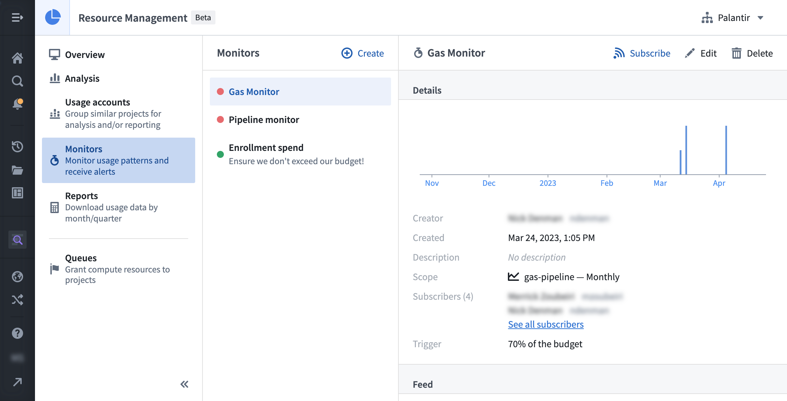
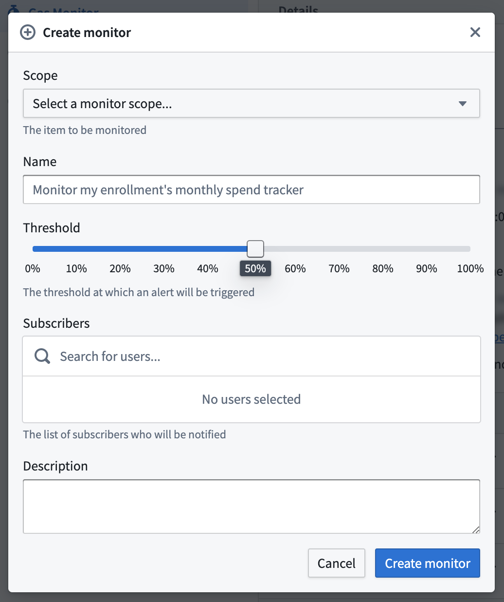
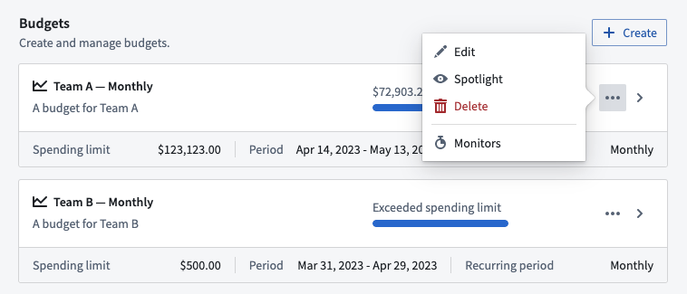

:::callout{theme="warning"} Monitors have been deprecated in favor of anomaly detection. :::
Monitors in Resource Management allow users to track usage patterns and spend activity, without needing to monitor the application itself. Subscribers to monitors will receive notifications to take action when estimated usage approaches a budget.
A monitor has a scope, a trigger, events, and subscriber(s).
If the trigger on the scope is fulfilled, an event is created and the subscriber(s) is/are notified.
:::callout{theme="warning"} Due to expected latency in measuring usage, an event could be triggered after the trigger has been breached (for example, specifying a trigger of 70% may result in an event triggered at 75%). In some rare cases, this latency could take up to 26 hours. :::
Monitors are currently designed to track budgets. In the future, they will also be equipped to track enrollments and usage accounts.
To use monitors, one or more of the following roles are required:
Enrollment administrator: View, create, edit, and delete monitors.Resource management administrator: View, create, edit, and delete monitors.Resource management viewer: View monitors.Roles are granted through the Enrollment permissions page in Control Panel.
In Resource Management, select Monitors in the left sidebar. This will display a list of all monitors available in your enrollment. Select a single monitor to view its trend, details, and events. Regular observation can be helpful to learn how often a monitor is triggered and whether it provides useful signal.

You can create a monitor in two ways:


Enter the remaining information, then select Create monitor. The following details can be specified:
:::callout{theme="danger"} Deleting a monitor also deletes its events and unsubscribes all subscribers. This action cannot be undone. :::
While viewing a single monitor, select the Delete button. When the warning dialog appears, select Confirm.